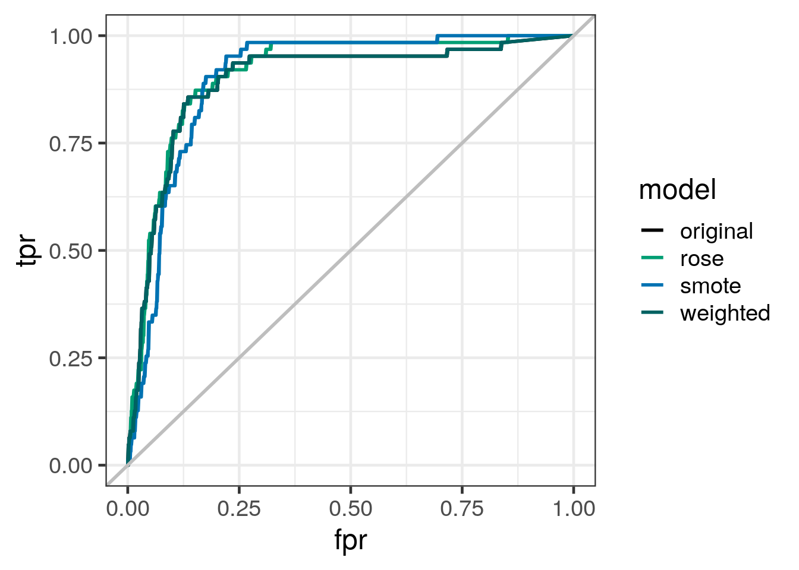
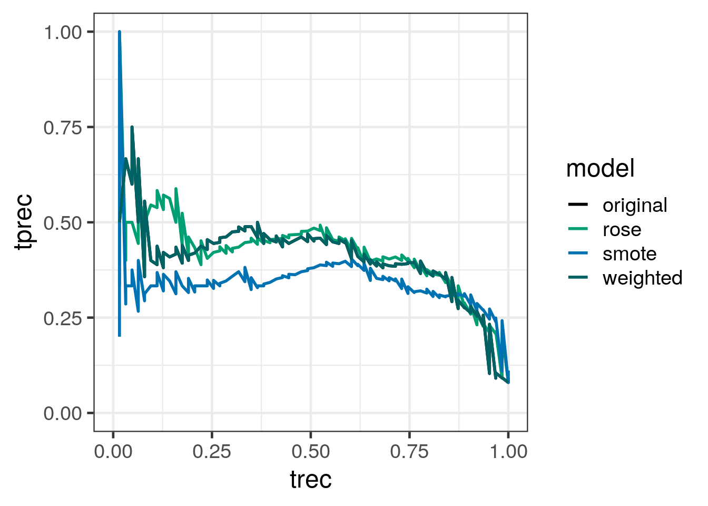
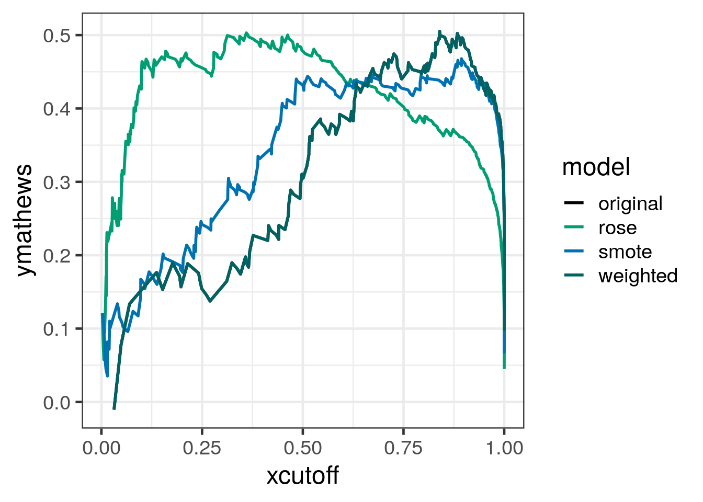
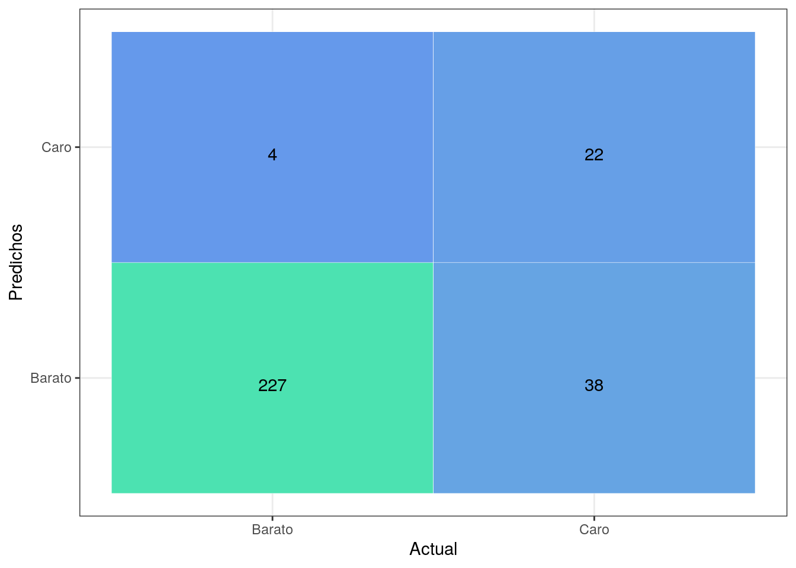

En primer lugar cargaremos los datasets necesarios para realizar el modelo.
library(car)
library(mgcv)
library(parallel)
library(dplyr)
datasetTrain <- readRDS("datasetTrain.rds")
datasetTest<- readRDS("datasetTest.rds")
validation_sin_na<- readRDS("datasetValidation.rds")
datasetTrainTransformed<- readRDS("datasetTrainTransformed.rds")
datasetTestTransformed<- readRDS("datasetTestTransformed.rds")
validationTransformed<- readRDS("validationTransformed.rds")
#names(datasetTrain) <- make.names(names(datasetTrain))
#names(datasetTest) <- make.names(names(datasetTrain))
#names(validation_sin_na) <- make.names(names(validation_sin_na))
#names(datasetTrainTransformed) <- make.names(names(datasetTrainTransformed))
#names(datasetTestTransformed) <- make.names(names(datasetTestTransformed))
#names(validationTransformed) <- make.names(names(validation_sin_na))
var_modelo_clasificador <- readRDS("var_modelo_clasificador.rds")Haremos un breve preprocesamiento para quitar outliers que se hayan podido colar, así como cambiar el nombre de algunas columnas para hacerlas compatibles con Caret.
dataSetTrainGAMLogistic <- readRDS('datasetTrainModeloClasificador.rds') %>% filter( ! (exp(SalePrice) < 200000 &&exp(GrLivArea) > 4000 )) %>% dplyr::select(-c('SalePrice')) %>% na.omit()
dataSetTestGAMLogistic <- readRDS('datasetTestModeloClasificador.rds') %>% filter(! (exp(SalePrice) < 200000 &&exp(GrLivArea) > 4000 )) %>% dplyr::select(-c('SalePrice')) %>% na.omit()
dataSetValidationGAMLogistic <- readRDS('datasetValidationModeloClasificador.rds')
names(dataSetTrainGAMLogistic) <- make.names(names(dataSetTrainGAMLogistic))
names(dataSetTestGAMLogistic) <- make.names(names(dataSetTestGAMLogistic))
names(dataSetValidationGAMLogistic) <- make.names(names(dataSetValidationGAMLogistic))
variablesEliminarCorr <- c()obtenFormulaGAM<-function(dataset,varPrincipal,modelo_continuas,variableNames,variablesEliminar=variablesEliminarCorr,normalizarNombresVariables = TRUE)
{
variablesFinal <- c()
factores <- names(sapply(dataset,is.factor)[sapply(dataset,is.factor) == TRUE])
for(variable in modelo_continuas)
{
if(!variable %in% variablesEliminarCorr) {
numeroElementosDistintos = dim(unique(dataset[variable]))[1]
numeroK <- numeroElementosDistintos
if(numeroK > 9){
numeroK <- -1
}
if(!variable %in% factores) {
if(grepl('^[0-9]', variable) && normalizarNombresVariables) {
nuevoValor2 <- paste('s(X',variable,', k= ',numeroK,')',collapse='',sep = "")
} else {
nuevoValor2 <- paste('s(',variable,', k= ',numeroK,')')
}
} else {
if(grepl('^[0-9]', variable) && normalizarNombresVariables) {
nuevoValor2 <- paste('X',variable,collapse='',sep = "")
} else {
nuevoValor2 <- paste(variable)
}
}
if(numeroElementosDistintos > 1 && ! variable %in% variablesEliminar ) {
variablesFinal <- c(variablesFinal,nuevoValor2)
}
}
}
#print(variablesFinal)
as.formula(paste(varPrincipal, paste(variablesFinal, collapse=" + "), sep=" ~ "))
}
obtenFormulaGAMCaret <-function(dataset,varPrincipal,modelo_continuas,variableNames,variablesEliminar=variablesEliminarCorr,normalizarNombresVariables = TRUE)
{
variablesFinal <- c()
factores <- names(sapply(dataset,is.factor)[sapply(dataset,is.factor) == TRUE])
for(variable in modelo_continuas)
{
if(!variable %in% variablesEliminarCorr) {
if(grepl('^[0-9]', variable)) {
numeroElementosDistintos = 999
} else {
numeroElementosDistintos = dim(unique(dataset[variable]))[1]
}
numeroK <- numeroElementosDistintos
if(numeroK > 9){
numeroK <- -1
}
if(!variable %in% factores) {
#nuevoValor <- paste('s(',variable,',by = MSSubClass)')
if(grepl('^[0-9]', variable) && normalizarNombresVariables) {
nuevoValor2 <- paste('X',variable,collapse='',sep = "")
} else {
nuevoValor2 <- paste(variable)
}
} else {
if(grepl('^[0-9]', variable) && normalizarNombresVariables) {
nuevoValor2 <- paste('X',variable,collapse='',sep = "")
} else {
nuevoValor2 <- paste(variable)
}
}
if(numeroElementosDistintos > 1 && ! variable %in% variablesEliminar ) {
variablesFinal <- c(variablesFinal,nuevoValor2)
}
}
}
as.formula(paste(varPrincipal, paste(variablesFinal, collapse=" + "), sep=" ~ "))
}Una vez realizados los procesos anteriores, obtendremos con la siguiente función la fórmula del modelo con la que estamos trabajando en todos los algoritmos de clasificación para discriminar casas baratas y caras:
#formulaClasificador = obtenFormulaGAM(dataSetTrainGAMLogistic,c('GrupoPrecio'),var_modelo_clasificador,variablesEliminarCorr)
formulaClasificadorCaret = obtenFormulaGAMCaret(dataSetTrainGAMLogistic,c('GrupoPrecio'),var_modelo_clasificador,variablesEliminarCorr)predictLogistic <- function(modelo,dataset,caret = FALSE ) {
predictedCarosBaratosArray <- data.frame(indice=character(), valorPredicho=character(), valorReal=character())
for (index in seq(1,nrow(dataset))) {
try(
{ try( {
predictedCarosBaratos <- predict(modelo,dataset[index,] , type="prob")
predictedCarosBaratosArray %>% add_row(indice = index ,valorPredicho = predictedCarosBaratos[1], valorReal = dataset[index,]$GrupoPrecio)
})
}
)
}
return(predictedCarosBaratosArray)
}Ahora empezaremos al con la generación de varios modelos. Debido a que tenemos un dataset desbalanceado, jugaremos un poco con técnicas de generación sintética de muestras para intentar equilibrar los datasets en el momento de la generación del modelo. En primer lugar, obtendremos un modelo de clasificación sin utilizar ninguna de estas técnicas para comprobar si el uso de técnicas que ayudan a balancer el dataset contribuyen a obtener un mejor modelo.
library('caretEnsemble')
library('caret')
set.seed(5627)
trainFolds_full <- createFolds(dataSetTrainGAMLogistic$GrupoPrecio, k = 10)
myControl <- trainControl(method = "repeatedcv",
number = 10,
repeats = 5,
summaryFunction = twoClassSummary,
classProbs = TRUE,
savePredictions = TRUE,
index = trainFolds_full)
modeloGAMLogisticRegressionCarosCaret <- train(formulaClasificadorCaret ,
data = dataSetTrainGAMLogistic,
method="gamSpline",
family=binomial(link="logit"),
metric = "MCC",
trControl=myControl)prediccionModeloTestCaret <- predict(modeloGAMLogisticRegressionCarosCaret,dataSetTestGAMLogistic,type="prob")
library(InformationValue)
optCutOff <- optimalCutoff(dataSetTestGAMLogistic$GrupoPrecio, prediccionModeloTestCaret)[1]
library(pROC)
#roc(dataSetTestGAMLogistic$GrupoPrecio,prediccionModeloTestCaret[, 2])$aucAhora obtendremos un nuevo modelo penalizando con un peso en el proceso de entrenamiento la clase mayoritaria y haciendo que la clase minoritaria tenge menos preponderancia en el proceso de entrenamiento.
pesos_modelo <- ifelse(dataSetTrainGAMLogistic$GrupoPrecio == "Caro",
(1/table(dataSetTrainGAMLogistic$GrupoPrecio)[1]) * 0.5,
(1/table(dataSetTrainGAMLogistic$GrupoPrecio)[2]) * 0.5)
myControl$seeds <- prediccionModeloTestCaret$control$seeds
modeloGAMLogisticRegressionCarosCaret_pesos <- train(formulaClasificadorCaret,
data = dataSetTrainGAMLogistic,
method = "gamSpline",
family=binomial(link="logit"),
verbose = FALSE,
weights = pesos_modelo,
metric = "MCC",
trControl = myControl)
#prediccionModeloTestCaret_pesos <- #predict(modeloGAMLogisticRegressionCarosCaret_pesos,dataSetTestGAMLogistic,type="prob")
#rocObject <- roc(dataSetTestGAMLogistic$GrupoPrecio,prediccionModeloTestCaret_pesos[, 2])Ahora generaremos un nuevo modelo utilizando como técnica de generación sintética de muestras SMOTE:
library(DMwR)
dataSetTrainGAMLogisticSMOTE <- SMOTE(GrupoPrecio ~ ., as.data.frame(dataSetTrainGAMLogistic), perc.over = 20000, perc.under=100)
trainFolds_full <- createFolds(dataSetTrainGAMLogisticSMOTE$GrupoPrecio, k = 10)
myControlSmote <- trainControl(method = "repeatedcv",
number = 10,
repeats = 5,
summaryFunction = twoClassSummary,
classProbs = TRUE,
index = trainFolds_full,
savePredictions = TRUE #,
#sampling = "smote"
)
myControlSmote$seeds <- prediccionModeloTestCaret$control$seeds
modeloGAMLogisticRegressionCarosCaret_smote <- train(formulaClasificadorCaret,
data = dataSetTrainGAMLogisticSMOTE,
method = "gamSpline",
family=binomial(link="logit"),
verbose = FALSE,
metric = "MCC",
trControl = myControlSmote)
#prediccionModeloTestCaret_smote <- #predict(modeloGAMLogisticRegressionCarosCaret_smote,dataSetTestGAMLogistic,type="prob")Ahora generaremos un nuevo modelo utilizando como técnica de generación sintética de muestras ROSE:
library(ROSE)
dataSetTrainGAMLogisticROSE <- ROSE(GrupoPrecio ~ ., as.data.frame(dataSetTrainGAMLogistic),seed = 1)$data
trainFolds_full <- createFolds(dataSetTrainGAMLogisticROSE$GrupoPrecio, k = 10)
myControlROSE <- trainControl(method = "repeatedcv",
number = 10,
repeats = 5,
summaryFunction = twoClassSummary,
classProbs = TRUE,
index = trainFolds_full,
savePredictions = TRUE #,
#sampling = "smote"
)
myControlROSE$seeds <- prediccionModeloTestCaret$control$seeds
modeloGAMLogisticRegressionCarosCaret_rose <- train(formulaClasificadorCaret,
data = dataSetTrainGAMLogisticROSE,
method = "gamSpline",
family=binomial(link="logit"),
verbose = FALSE,
metric = "MCC",
trControl = myControlSmote
)
#prediccionModeloTestCaret_smote <- #predict(modeloGAMLogisticRegressionCarosCaret_smote,dataSetTestGAMLogistic,type="prob")Una vez obtenidos los modelos, los compararemos con las típicas curvas ROC (no son las mejores para la evaluación de datasets desbalanceados) y las curvas que enfrentran los parámetros precission/recall. Todas estas evaluaciones se realizarón con el dataset de TEST. El resultado es el que se muestra a continuación:
library(pROC)
library(ROCR)
calculate_roc <- function(modelo, test,umbralDecision){
p <- predict(modelo,test, type = 'prob')
tabela <- table(factor(ifelse(p[,2]>umbralDecision,'Caro','Barato'),
levels = c('Barato','Caro')), test$GrupoPrecio)
roc <- roc(test$GrupoPrecio,p[, 2])
roc
}
model_list <- list(original = modeloGAMLogisticRegressionCarosCaret,
weighted = modeloGAMLogisticRegressionCarosCaret_pesos,
rose = modeloGAMLogisticRegressionCarosCaret_rose,
smote = modeloGAMLogisticRegressionCarosCaret_smote)
results_list_roc <- list(NA)
results_list_f1 <- list(NA)
results_list_mmc <- list(NA)
num_mod <- 1
for(model_gam in model_list){
the_roc = calculate_roc(model_gam,dataSetTestGAMLogistic,0.5)
results_list_roc[[num_mod]] <-
data_frame(tpr = the_roc$sensitivities,
fpr = 1 - the_roc$specificities,
model = names(model_list)[num_mod])
#roc2 <- roc %>% coords(ret = "all", transpose = FALSE) %>%
# select(precision, recall)
#roc2 <- roc %>% select(precision, recall)
resultParcial <- t(pROC::coords(the_roc, "all", ret = c("recall", "precision")))
results_list_f1[[num_mod]] <-
data_frame(trec = resultParcial[,1],
tprec = resultParcial[,2],
model = names(model_list)[num_mod])
p <- predict(model_gam,dataSetTestGAMLogistic, type = 'prob')
rf_test_pred <- prediction(p[ , 1], dataSetTestGAMLogistic$GrupoPrecio,
c('Barato', 'Caro'))
rf_test_mcc <- performance(rf_test_pred, 'mat')
results_list_mmc[[num_mod]] <-
data_frame(xcutoff = rf_test_mcc@x.values[[1]],
ymathews = (-1)* rf_test_mcc@y.values[[1]],
model = names(model_list)[num_mod])
num_mod <- num_mod + 1
}
results_df_roc <- bind_rows(results_list_roc)
results_df_f1 <- bind_rows(results_list_f1)
results_df_mcc <- bind_rows(results_list_mmc)
custom_col <- c("#000000", "#009E73", "#0072B2","#006262")
ggplot(aes(x = fpr, y = tpr, group = model), data = results_df_roc) +
geom_line(aes(color = model), size = 1) +
scale_color_manual(values = custom_col) +
geom_abline(intercept = 0, slope = 1, color = "gray", size = 1) +
theme_bw(base_size = 18)
ggplot(aes(x = trec, y = tprec, group = model), data = results_df_f1) +
geom_line(aes(color = model), size = 1) +
scale_color_manual(values = custom_col) +
#geom_abline(intercept = 0, slope = 1, color = "gray", size = 1) +
theme_bw(base_size = 18)
Como vemos en las gráficas anteriores, el modelo que parece que da mejores resultados es el realizado con el proceso “ROSE” de generación sintética de datos para pasar a la fase de comparación de modelos.
Una vez elegido el modelo, queda corroborar esta decisión mediante la métrica de Mathews y comprobar si el valor elegido para el umbral de decisión de 0.5 para separar las clases es razonable. La siguiente gráfica corrobora estas dos afirmaciones.
ggplot(aes(x = xcutoff, y = ymathews, group = model), data = results_df_mcc) +
geom_line(aes(color = model), size = 1) +
scale_color_manual(values = custom_col) +
#geom_abline(intercept = 0, slope = 1, color = "gray", size = 1) +
theme_bw(base_size = 18)
saveRDS(modeloGAMLogisticRegressionCarosCaret_rose, "modeloGAMLogisticRegressionCarosCaret.rds")A continuación realizamos la evaluación final del modelo elegido con los datos de evaluación y dibujaremos la matriz de confusión para evaluar la calidad del clasificador obtenido.
source("funcs.R")
predictEvaluation <- predict(modeloGAMLogisticRegressionCarosCaret_rose,dataSetValidationGAMLogistic)
cm <- caret::confusionMatrix(predictEvaluation, as.factor(dataSetValidationGAMLogistic$GrupoPrecio), mode = "prec_recall" )
tab_test <- table(predictEvaluation, dataSetValidationGAMLogistic$GrupoPrecio, dnn = c("Actual", "Predichos"))
draw_confusion_matrix(tab_test, "Actual", "Predichos")
predictGAM <- predict(modeloGAMLogisticRegressionCarosCaret_rose,dataSetValidationGAMLogistic,type="prob") %>% na.omit()
predictGAM$obs <- dataSetValidationGAMLogistic$GrupoPrecio
predictGAM$Group <- rep("gam",nrow(predictGAM))
saveRDS(predictGAM, "preditGAM.rds")